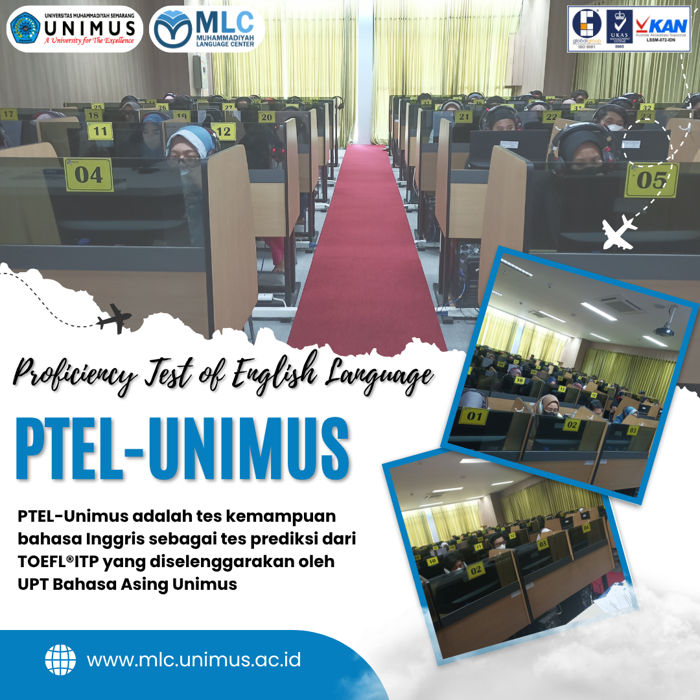

Tentang PTEL
PTEL-Unimus adalah tes kemampuan bahasa Inggris sebagai tes prediksi dari TOEFL®ITP yang diselenggarakan oleh UPT Bahasa Asing Unimus untuk mengukur kemampuan berbahasa Inggris di lingkungan sivitas akademika Unimus ataupun instansi/lembaga yang membutuhkannya. Bagi mahasiswa Unimus sendiri, sertifikat PTEL-Unimus merupakan salah satu persyaratan wajib yang digunakan untuk mendaftar wisuda, mendaftar pekerjaan setelah lulus, dan juga syarat untuk melanjutkan ke pendidikan yang lebih tinggi.
Komponen Tes
Mengukur kemampuan memahami percakapan, monolog, dan informasi lisan dalam Bahasa Inggris.
Mengukur penguasaan struktur kalimat, tata bahasa, dan penggunaan Bahasa Inggris yang tepat.
Mengukur kemampuan memahami teks bacaan, gagasan utama, informasi rinci, dan makna kosakata dalam Bahasa Inggris.
PTEL Digunakan Untuk
- Syarat yudisium atau kelulusan mahasiswa sesuai ketentuan yang berlaku.
- Persyaratan administrasi akademik.
- Persyaratan beasiswa.
- Rekrutmen kerja.
- Persiapan studi lanjut.
- Sertifikat resmi dikeluarkan oleh MLC UNIMUS.

Informasi penting: Pendaftaran PTEL dilakukan melalui Sistem Informasi Manajemen (SIM) MLC. Peserta wajib memiliki akun SIM MLC terlebih dahulu.
Lihat jadwal pelaksanaan di halaman Jadwal PTEL & Remidi.
Ketentuan PTEL Berdasarkan SK Rektor
Pelaksanaan Proficiency Test of English Language (PTEL) untuk kelulusan mahasiswa UNIMUS mengacu pada Keputusan Rektor Universitas Muhammadiyah Semarang Nomor 593/UNIMUS/SK.PP/2025 tentang Pelaksanaan Proficiency Test of English Language (PTEL) untuk Kelulusan Mahasiswa Universitas Muhammadiyah Semarang. Keputusan ini berlaku sejak 29 Agustus 2025.
Pelaksanaan PTEL bagi Mahasiswa
Bagi mahasiswa Program D3 dan D4/S1/Profesi, pelaksanaan PTEL diwajibkan melalui UPT Bahasa Asing/MLC UNIMUS. Sementara itu, bagi Program Pascasarjana dan kelas RPL dapat menggunakan ketentuan melalui lembaga atau perguruan tinggi lain.
Pelaksanaan Offline dan Online
Pelaksanaan PTEL UNIMUS dapat dilaksanakan secara offline maupun online sesuai ketentuan yang berlaku.
Ketentuan PTEL Online
Pelaksanaan PTEL UNIMUS secara online dikhususkan bagi mahasiswa D3 dan D4/S1/Profesi/S2 yang berada di luar Jawa dan luar negeri.
Ketentuan Program Studi
Setiap program studi dapat menetapkan persyaratan penggunaan sertifikat PTEL pada seminar proposal, seminar hasil, atau ujian skripsi/tesis.
Masa Berlaku Sertifikat
Sertifikat PTEL UNIMUS berlaku selama dua tahun.
Ketentuan untuk Yudisium
Dalam hal pemenuhan syarat pendaftaran yudisium, keberlakuan sertifikat dikecualikan dari ketentuan masa berlaku sebagaimana disebutkan pada poin sebelumnya.
Validasi Sertifikat
Sertifikat yang diterima sebagai syarat pendaftaran yudisium adalah sertifikat yang telah divalidasi oleh UPT Bahasa Asing/MLC UNIMUS, dengan masa berlaku selama peserta berstatus sebagai mahasiswa aktif UNIMUS sesuai jenjangnya.
Ketentuan Lanjut Program Pascasarjana
Bagi mahasiswa D4 atau S1 yang akan melanjutkan Program Pascasarjana di UNIMUS, mahasiswa wajib mengambil PTEL kembali di Program Pascasarjana.
Ketentuan Lanjut Program Profesi
Bagi pendidikan akademik D3/D4/S1 yang akan melanjutkan Program Profesi di Universitas Muhammadiyah Semarang, mahasiswa tidak perlu mengambil PTEL kembali apabila sertifikat TOEFL pada pendidikan akademik masih berlaku atau dapat digunakan.
Catatan
Informasi ini merupakan ringkasan dari SK Rektor Universitas Muhammadiyah Semarang Nomor 593/UNIMUS/SK.PP/2025. Untuk informasi lebih lanjut mengenai jadwal, pendaftaran, pelaksanaan tes, validasi sertifikat, dan ketentuan teknis lainnya, mahasiswa dapat menghubungi admin Muhammadiyah Language Center (MLC) UNIMUS.
Alur Pelaksanaan PTEL
Peserta PTEL perlu mengikuti beberapa tahapan mulai dari pendaftaran akun, pemesanan kegiatan, pembayaran, pelaksanaan tes, hingga validasi sertifikat. Berikut alur pelaksanaan PTEL di MLC UNIMUS.
Pendaftaran Akun SIM MLC
Peserta terlebih dahulu melakukan pendaftaran akun melalui laman SIM MLC di sim.mlc.unimus.ac.id . Peserta mengisi biodata secara lengkap dan benar sesuai identitas resmi.
Pemesanan Kegiatan PTEL
Setelah memiliki akun, peserta masuk ke dashboard SIM MLC menggunakan NIM/username dan password yang telah didaftarkan. Peserta kemudian memilih menu Pesan Kegiatan dan memilih program Proficiency Test of English Language (PTEL).
Pemilihan Jadwal dan Konfirmasi Data
Peserta memilih jadwal PTEL yang tersedia sesuai kebutuhan. Sebelum melanjutkan proses, peserta perlu memastikan bahwa data diri, nomor WhatsApp, dan informasi akademik telah terisi dengan benar.
Pembayaran
Setelah memilih kegiatan, sistem akan menampilkan tagihan pembayaran. Peserta melakukan pembayaran sesuai nominal yang tertera melalui rekening atau metode pembayaran resmi yang tersedia di SIM MLC. Pembayaran yang berhasil akan tervalidasi secara otomatis oleh sistem.
Pengunduhan Kartu Peserta
Setelah pembayaran berhasil tervalidasi, peserta dapat mengunduh kartu peserta melalui akun SIM MLC masing-masing. Kartu peserta digunakan sebagai bukti keikutsertaan dalam pelaksanaan PTEL.
Pelaksanaan Tes
Peserta mengikuti PTEL sesuai jadwal, lokasi, dan ketentuan yang telah ditetapkan. PTEL dapat dilaksanakan secara offline maupun online sesuai ketentuan yang berlaku. Komponen tes meliputi Listening, Structure, dan Reading.
Pengumuman Hasil
Hasil PTEL akan diinformasikan sesuai prosedur yang berlaku di MLC UNIMUS. Peserta yang telah dinyatakan memenuhi ketentuan dapat menggunakan sertifikat PTEL untuk kebutuhan akademik sesuai aturan masing-masing program studi.
Validasi Sertifikat
Untuk keperluan yudisium, sertifikat PTEL harus telah divalidasi oleh UPT Bahasa Asing/MLC UNIMUS. Validasi ini diperlukan agar sertifikat dapat digunakan sebagai salah satu dokumen pendukung proses kelulusan.
Daftar PTEL melalui SIM MLC
Login ke SIM MLC, pilih kegiatan PTEL, lakukan pembayaran, lalu unduh kartu peserta setelah pembayaran tervalidasi.
Daftar melalui SIM MLC Lihat Panduan SIM MLC Hubungi Admin MLC